Analyzing Chart Patterns: Introduction
Ever looked at the chart of a stock or commodity? Most likely, you have. Just about everyone who has ever analyzed a security takes a look at the price movements of the past month, quarter, year, etc.
For many analysts, the chart of a security is the starting point for all future analysis. Even staunch critics of technical analysis use charts to some extent. And for good reason: charts can provide a lot of information in a small amount of time.
Taking a look at the five-year chart of a company, you can quickly determine how well shareholders have done over the period. Based on the movements represented on the chart, one can tell if a company's share value has grown over the period or lagged.
The chart reader also can determine the volatility of the company's shares by looking at the movements on the chart. A company whose stock exhibits very jagged up-and-down movements is clearly more volatile than a company whose stock moves relatively smoothly across time.
But this is only the tip of the iceberg in terms of how charts are used by market participants. In this tutorial, we'll introduce you to some of the more advanced uses of charts.
Analyzing Chart Patterns: Why Charts?
By Chad Langager and Casey Murphy, senior analyst of ChartAdvisor.com
Before the advent of computers and data feeds, the use of charts to formulate trading strategies was outside the mainstream of trading techniques. The reason, creating charts was difficult. Each chart had to be created by hand, with chartists adding another data point at the close of trading for each security they were following. Also, chart users were often misrepresented as a bizarre group of individuals huddled in the recesses of the brokerage house as they added the latest data point to their closely coveted charts.
But with the advancement of technology and the increased popularity of technical analysis, the use of charts has greatly increased, making them one of, if not the most important tools used by technical traders.
A single chart has the ability to display a significant amount of information. More conceptually, charts are an illustration of the struggle between buyers and sellers. While this point is debatable between the schools of investment like technical, fundamental and efficient market analysis, technical analysis assumes that: a) prices discount everything, b) prices moves in trends and c) history repeats itself.
Assuming the above tenets are true, charts can be used to formulate trading signals and can even be the only tool a trader utilizes.
Patterns on a Chart
Chart patterns signal to traders that the price of a security is likely to move in one direction or another when the pattern is complete.
There are two types of patterns in this area of technical analysis: reversal and continuation. A reversal pattern signals that a prior trend will reverse on completion of the pattern. Conversely, a continuation pattern indicates that the prior trend will continue onward upon the pattern's completion.
The difficulty in identifying chart patterns and their subsequent signals is that chart use is not an exact science. In fact, it's often viewed as more of an art than a science. While there is a general idea and components to every chart pattern, the price movement does not necessarily correspond to the pattern suggested by the chart. This should not discourage potential users of charts - once the basics of charting are understood, the quality of chart patterns can be enhanced by looking at volume and secondary indicators.
There are several concepts that need to be understood before reading about specific chart patterns. The first is a trendline, which is a line drawn on a chart to signal a level of support or resistance for the price of the security. Support trendlines are the levels at which prices have difficulty falling below. Conversely, a resistance trendline illustrates the level at which prices have a hard time going above. These trendlines can be constant price levels, such as $50, or rise or fall in the direction of the trend as time goes on.
Now that we have an understanding of the concepts behind the use of charts as a trading technique, we can start to explore the many different patterns used by chartists.
Analyzing Chart Patterns: Head And Shoulders
The head-and-shoulders pattern is one of the most popular and reliable chart patterns in technical analysis. And as one might imagine from the name, the pattern looks like a head with two shoulders.
Head and shoulders is a reversal pattern that, when formed, signals the security is likely to move against the previous trend. There are two versions of the head-and-shoulders pattern. The head-and-shoulders top is a signal that a security's price is set to fall, once the pattern is complete, and is usually formed at the peak of an upward trend. The second version, the head-and-shoulders bottom (also known as inverse head and shoulders), signals that a security's price is set to rise and usually forms during a downward trend.
Both of these head and shoulders have a similar construction in that there are four main parts to the head-and-shoulder chart pattern: two shoulders, a head and a neckline. The patterns are confirmed when the neckline is broken, after the formation of the second shoulder.
| 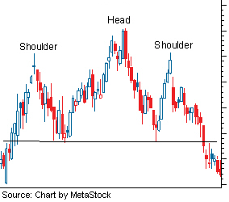 |
| Figure 1: Head-and-shoulders pattern |
{kind=link}
The head and shoulders are sets of peaks and troughs. The neckline is a level of support or resistance. The head and shoulders pattern is based on Dow Theory's peak-and-trough analysis. An upward trend, for example, is seen as a period of successive rising peaks and rising troughs. A downward trend, on the other hand, is a period of falling peaks and troughs. The head-and-shoulders pattern illustrates a weakening in a trend where there is deterioration in the peaks and troughs.
Head and Shoulders TopAgain, the head-and-shoulders top signals to chart users that a security's price is likely to make a downward move, especially after it breaks below the neckline of the pattern. Due to this pattern forming mostly at the peaks of upward trends, it is considered to be a trend-reversal pattern, as the security heads down after the pattern's completion.
This pattern has four main steps for it to complete itself and signal the reversal. The first step is the formation of the left shoulder, which is formed when the security reaches a new high and retraces to a new low. The second step is the formation of the head, which occurs when the security reaches a higher high, then retraces back near the low formed in the left shoulder. The third step is the formation of the right shoulder, which is formed with a high that is lower than the high formed in the head but is again followed by a retracement back to the low of the left shoulder. The pattern is complete once the price falls below the neckline, which is a support line formed at the level of the lows reached at each of the three retracements mentioned above.
Inverse Head and Shoulders (Head-and-Shoulders Bottom)
The inverse head-and-shoulders pattern is the exact opposite of the head-and-shoulders top, as it signals that the security is set to make an upward move. Often coming at the end of a downtrend, the inverse head and shoulders is considered to be a reversal pattern, as the security typically heads higher after the completion of the pattern.
| 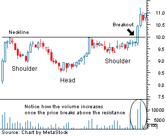 |
| Figure 2: Inverse head-and-shoulders pattern |
{kind=link}
Again, there are four steps to this pattern, starting with the formation of the left shoulder, which occurs when the price falls to a new low and rallies to a high. The formation of the head, which is the second step, occurs when the price moves to a low that is below the previous low, followed by a return to the previous high. This move back to the previous high creates the neckline for this chart pattern. The third step is the formation of the right shoulder, which sees a sell-off, but to a low that is higher than the previous one, followed by a return to the neckline. The pattern is complete when the price breaks above the neckline.
The Breaking of the Neckline and the Potential Return Move
As seen from the above, the head-and-shoulders pattern is complete when the neckline is broken; the trend is then considered reversed, and the security should be heading in a new direction. The point of breakout is when most traders following the pattern would enter the security.
However, the security will not always just continue in the direction suggested by the pattern after the breakout. For this reason it's important to be aware of what is known as a "throwback" move. This situation occurs when the price breaks through the neckline, setting a new high or low (depending on the pattern), followed by a retreat back to the neckline.
| 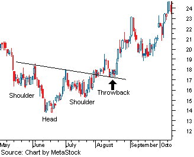 |
| Figure 3: Throwback move illustration |
{kind=link}
This move back to the neckline is considered to be a test of the pattern and the newly reversed support or resistance. Remember that when a trend shifts (or a reversal pattern is confirmed), what was once support now become resistance, and vice versa. In the case of an inverse head-and-shoulders pattern (as shown in the chart above), the neckline represented a level of resistance for the security before it broke out. Upon the security moving above the neckline to confirm the pattern, the restrictive neckline becomes support for any move back up.
While it can be alarming to see a security move in the opposite direction of the trend suggested by the pattern, it isn't all that bad. The reason being that the successful test of this new level of support or resistance helps to strengthen the pattern and its suggested new direction. So, it's important to wait for the pattern to test out and not sell out too quickly - before the pattern makes its bigger moves.
Volume
In technical analysis and chart-pattern analysis, volume plays an important role as it is used as a secondary indicator. Volume indicates activity and money movement. When volume is high, there is a lot of activity and money changing hands - making it an important indicator to follow.
For the head-and-shoulders pattern, volume is used mainly at the point of breakout to help confirm the pattern. At this point, it's important that the breakout happens on a large-volume move. For a head-and-shoulders top, when the price breaks below the neckline (in a downward direction), it's best when this occurs during a large volume increase, which signals heavy selling. This strongly indicates that the underlying supply and demand in the market is moving in the same direction the chart pattern is predicting.
Volume can also be used as a secondary indicator during the formation of the pattern, well before the breakout, to gain an idea of the pattern's strength.
For a head-and-shoulders top, the left shoulder should show heavy volume as it hits its new peak. Low volume should take the left shoulder down to the neckline. The run towards the peak in the head should be on lighter volume compared to the peak formed in the left shoulder.
This should be a warning, as volume should move with trends - not against them. The peak formed in the right shoulder should be seen with even lighter volume than in either the head or the left shoulder. And again, the volume should be high when the neckline is broken, which is by far the most important area to watch in terms of volume. If the volume is lighter on the neckline break, the chances of the price moving back to the neckline after breaking is greater than if the neckline break was accompanied by large volume.
This interaction of volume and price movement in forming the reversal signal is not set in stone. However, it is the general tendency in the chart pattern.
Slope of the Neckline
Another key factor in the head-and-shoulders pattern is the formation of the neckline. The reason being that the neckline acts as support or resistance during the formation of the pattern, along with being the entry point at which the pattern confirms itself.
In most of the above examples, the neckline is flat, but this need not be the case for the pattern to provide a potential trade. In most cases, the neckline will in fact be slanted either up or down. In general, a technically strong head-and-shoulders top should have a flat or slightly upward-trending neckline. For a head-and-shoulders bottom, it should be flat or slightly downward, similar to the one shown above in figure 3.
Price Objective
An important, but often overlooked, factor in technical analysis and chart patterns is the calculation of price objectives. This is a measure of where the price is considered to be headed, based on a confirmed pattern.
While the price's direction is already known, based on the signal, what needs to be calculated is the projected price movement. This is done so that targets can be set, protective stops can be instituted and the worth of a trade can be evaluated.
| 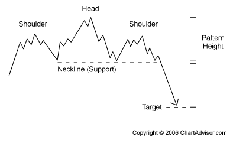 |
| Figure 4 |
{kind=link}
This is measured based on the height of the chart pattern, which is essentially the distance in price between the peak of the head and the neckline. For example, let's say that in a head-and-shoulders top, the peak of the head is formed at $50 and the neckline was established at $40 - a difference of $10.
The price objective is calculated by subtracting the price at which the pattern breaks the neckline ($40) by the difference between the head and the neckline ($10). Based on this example, the price objective is $30 ($40-$10).
This price objective is not an absolute and is used as a guideline to the attractiveness of a trade. The larger the difference between the objective and the price at the neckline, the more worth the trade has, as it will yield greater returns.
Analyzing Chart Patterns: Cup And Handle
A cup-and-handle pattern resembles the shape of a tea cup on a chart. This is a bullish continuation pattern where the upward trend has paused, and traded down, but will continue in an upward direction upon the completion of the pattern. This pattern can range from several months to a year, but its general form remains the same.
The cup-and-handle pattern is preceded by an upward move, which stalls and sells off. The sell-off is what forms the initial part of this pattern. After the sell-off, the security will basically trade flat for an extended period of time, with no clear trend. The next part of the pattern is the upward move back towards the peak of the preceding upward move. The last part of the pattern, known as the handle, is a relatively smaller downward move before the security moves higher and continues the previous trend.
Components of the Cup and Handle
There are several components of the cup and handle that should be noted in order to evaluate the potential trading signal. First, it's important that there is an upward trend before the formation of the cup and handle. In general, the larger the prior trend is, the lower the potential for a large breakout after the pattern has been completed. The reason being that a lot of the run-up in the security happened prior to the formation of the cup, again weakening the size of the potential upward move.
| 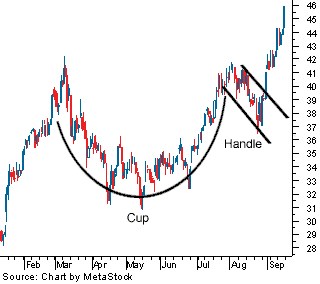 |
| Figure 1: Cup-and-handle pattern |
{kind=link}
The construct of the cup itself is also important: it should be a nicely rounded formation, similar to a semi-circle. The reason is that a cup-and-handle pattern is a signal of consolidation within a trend, where the weaker investors leave the market and new buyers and resolute holders stay in the security. If the shape of the cup is too sharp (or quick), it is not considered a true consolidation phase in the upward trend and thus weakens the potential trade signal.
The cup's height should also be a focus: a traditional cup-and-handle pattern should be between one-third and two-thirds the size of the previous upward movement, depending on market volatility. So, if the move of the preceding trend was from $10 to $35, the height of the cup should be at least $8 (roughly $25 x 33%) to $16 (roughly $25 x 66%). The height of the cup can also be used as an initial price target after the pattern completes itself and breaks out of the handle.The Handle
Another important component to watch is the handle, as it completes the pattern. As mentioned before, the handle is the downward move by the security after the upward move on the right side of the cup. If the handle is downward moving, the general rule is that the handle's downward movement can retrace one-third of the gain made in the right side of the cup. During this downward move, a descending trendline can be drawn, which forms the signal for the breakout. A move by the security above this descending trendline is a signal that the prior upward trend is set to begin.
A more conservative breakout signal would be above the price point of the two peaks in the cup. This is the price where the initial upward trend peaked and the point where the cup's upward move on the right side peaked before entering the handle. A breakout above this point is the strongest signal of a true resumption of the prior trend.
As with most chart patterns, volume is vital in the confirmation of the pattern itself and the signal formed. Again, the most important area of focus is the breakout: the stronger the volume on the upward breakout, the clearer the sign that the upward trend will continue. Like the head-and-shoulders pattern, the price may move back to the trendline to test the support.
The cup and handle is another time-tested pattern that has created valuable gains for investors. The components mentioned above are not absolutes but help to highlight areas of focus as a security trades in a cup and handle.
Analyzing Chart Patterns: Double Top And Double Bottom
The double top and double bottom are another pair of well-known chart patterns whose names don't leave much to the imagination. These two reversal patterns illustrate a security's attempt to continue an existing trend. Upon several attempts to move higher, the trend is reversed and a new trend begins. These chart patterns formed will often resemble what looks like a "W" (for a double bottom) or an "M" (double top).
Double Top
The double-top pattern is found at the peaks of an upward trend and is a clear signal that the preceding upward trend is weakening and that buyers are losing interest. Upon completion of this pattern, the trend is considered to be reversed and the security is expected to move lower.
The first stage of this pattern is the creation of a new high during the upward trend, which, after peaking, faces resistance and sells off to a level of support. The next stage of this pattern will see the price start to move back towards the level of resistance found in the previous run-up, which again sells off back to the support level. The pattern is completed when the security falls below (or breaks down) the support level that had backstopped each move the security made, thus marking the beginnings of a downward trend.
| 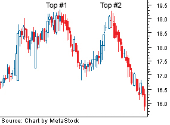 |
| Figure 1: Double-top pattern |
{kind=link}
It's important to note that the price does not need to touch the level of resistance but should be close to the prior peak. Also, when using this chart pattern one should wait for the price to break below the key level of support before entering. Trading before the signal is formed can yield disastrous results, as the pattern is only setting up the possibility for the trend reversal and could trade within this banded range for some time without falling through.
This pattern is a clear illustration of a battle between buyers and sellers. The buyers are attempting to push the security but are facing resistance, which prevents the continuation of the upward trend. After this goes on a couple of times, the buyers in the market start to give up or dry up, and the sellers start to take a stranglehold of the security, sending it down into a new downtrend.
Again, volume should be an important focus as one should look for an increase in volume when the security falls below the support level. Also, as in other chart patterns, do not be alarmed if there is a return to the previous support level that has now become a resistance level in the newly established trend.
Double Bottom
This is the opposite chart pattern of the double top as it signals a reversal of the downtrend into an uptrend. This pattern will closely resemble the shape of a "W".
| 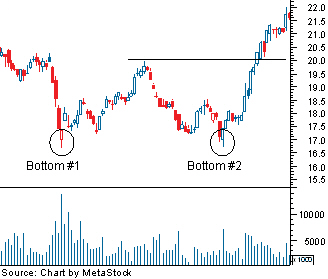 |
| Figure 2: Double-bottom pattern |
{kind=link}
The double bottom is formed when a downtrend sets a new low in the price movement. This downward move will find support, which prevents the security from moving lower. Upon finding support, the security will rally to a new high, which forms the security's resistance point. The next stage of this pattern is another sell-off that takes the security down to the previous low. These two support tests form the two bottoms in the chart pattern. But again, the security finds support and heads back up. The pattern is confirmed when the price moves above the resistance the security faced on the prior move up.
Remember that the security needs to break through the support line to signal a reversal in the downward trend and should be done on higher volume. As in the double top, do not be surprised if the price returns to the breakout point to test the new support level in the upward trend.
Price Objective and Adjustments
It's important to get an idea as to the size of the resulting move once the signal has been formed. In both the double top and double bottom, the initial price objective can be measured by taking the price distance between the support and resistance levels or the range that chart pattern trades.
For example, assume in a double top that the upward trend peaks at $50 and retraces to $40 to form the support level. Assuming everything follows through on the chart pattern and the support level is broken at $40, the initial price objective should be set at $30 ($40-$10).
Often in technical analysis and chart patterns, we're presented with an ideal chart setup; but in reality the pattern doesn't always look as perfect as it's supposed to. In double tops and double bottoms one thing to remember is that the price on the second test does not always need to reach the same distance as the first test.
Another problem that can occur is the second testing point, where the top or bottom actually breaks the level that the first top or bottom test created. If this occurs, it can give a signal that the previous trend will continue - instead of reverse - as the pattern suggests. However, don't be too quick to abandon the pattern as it could still materialize.
If the price does, in fact, move above the prior test, look to see if the move was accompanied by large volume, suggesting a trend continuation. For example, if on the second test of a double bottom the price falls below the support line on heavy volume, it is a good sign the downward trend will continue and not reverse. If the volume is very weak, it could just be a last attempt to continue the downward trend, but the trend will ultimately reverse.
The double tops and double bottoms are strong reversal patterns that can provide trading opportunities. But it is important to be careful with these patterns as the price can often move either way. Consequently, it's important that the trade is implemented once the support/resistance line is broken.
Analyzing Chart Patterns: Triangles
By Chad Langager and Casey Murphy, senior analyst of ChartAdvisor.com
As you may have noticed, chart pattern names don't leave much to the imagination. This is no different for the triangle patterns, which clearly form the shape of a triangle. The basic construct of this chart pattern is the convergence of two trendlines - flat, ascending or descending - with the price of the security moving between the two trendlines.
There are three types of triangles, which vary in construct and significance: the symmetrical triangle, the descending triangle and the ascending triangle.
Symmetrical triangle
The symmetrical triangle is mainly considered to be a continuation pattern that signals a period of consolidation in a trend followed by a resumption of the prior trend. It is formed by the convergence of a descending resistance line and an ascending support line. The two trendlines in the formation of this triangle should have a similar slope converging at a point known as the apex. The price of the security will bounce between these trendlines, towards the apex, and typically breakout in the direction of the prior trend.
If preceded by a downward trend, the focus should be on a break below the ascending support line. If preceded by an upward trend, look for a break above the descending resistance line. However, this pattern doesn't always lead to a continuation of the previous trend. A break in the opposite direction of the prior trend should signal the formation of a new trend.
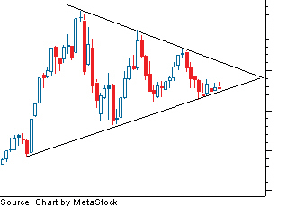 Figure 1: Symmetrical triangle
{kind=link}
Above is an example of a symmetrical triangle that is preceded by an upward trend. The first part of this pattern is the creation of a high in the upward trend, which is followed by a sell-off to a low. The price then moves to another high that is lower than the first high and again sells off to a low, which is higher than the previous low. At this point the trendlines can be drawn, which creates the apex. The price will continue to move between these lines until breakout.
The pattern is complete when the price breaks out of the triangle - look for an increase in volume in the direction of the breakout. This pattern is also susceptible to a return to the previous support or resistance line that it just broke through, so make sure to watch for this level to hold if it does indeed break out.
Ascending Triangle
The ascending triangle is a bullish pattern, which gives an indication that the price of the security is headed higher upon completion. The pattern is formed by two trendlines: a flat trendline being a point of resistance and an ascending trendline acting as a price support.
The price of the security moves between these trendlines until it eventually breaks out to the upside. This pattern will typically be preceded by an upward trend, which makes it a continuation pattern; however, it can be found during a downtrend.
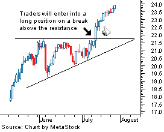 Figure 2: Ascending triangle
{kind=link}
As seen above, the price moves to a high that faces resistance leading to a sell-off to a low. This follows another move higher, which tests the previous level of resistance. Upon failing to move past this level of resistance, the security again sells off - but to a higher low. This continues until the price moves above the level of resistance or the pattern fails.
The most telling part of this pattern is the ascending support line, which gives an indication that sellers are starting to leave the security. After the sellers are knocked out of the market, the buyers can take the price past the resistance level and resume the upward trend.
The pattern is complete upon breakout above the resistance level, but it can fall below the support line (thus breaking the pattern), so be careful when entering prior to breakout.
Descending triangle
The descending triangle is the opposite of the ascending triangle in that it gives a bearish signal to chartists, suggesting that the price will trend downward upon completion of the pattern. The descending triangle is constructed with a flat support line and a downward-sloping resistance line.
Similar to the ascending triangle, this pattern is generally considered to be a continuation pattern, as it is preceded by a downward trendline. But again, it can be found in an uptrend.
| 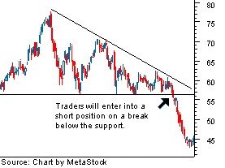 |
| Figure 3: Descending triangle |
{kind=link}
The first part of this pattern is the fall to a low that then finds a level of support, which sends the price to a high. The next move is a second test of the previous support level, which again sends the stock higher - but this time to a lower level than the previous move higher. This is repeated until the price is unable to hold the support level and falls below, resuming the downtrend.
This pattern indicates that buyers are trying to take the security higher, but continue to face resistance. After several attempts to push the stock higher, the buyers fade and the sellers overpower them, which sends the price lower.
Analyzing Chart Patterns: Flags And Pennants
By Chad Langager and Casey Murphy, senior analyst of ChartAdvisor.com
The flag and pennant patterns are two continuation patterns that closely resemble each other, differing only in their shape during the pattern's consolidation period. This is the reason the terms flag and pennant are often used interchangeably. A flag is a rectangular shape, while the pennant looks more like a triangle.
These two patterns are formed when there is a sharp price movement followed by generally sideways price movement, which is the flag or pennant. The pattern is complete when there is a price breakout in the same direction of the initial sharp price movement. The following move will see a similarly sharp move in the same direction as the prior sharp move. The complete move of the chart pattern - from the first sharp move to the last sharp move - is referred to as the flag pole.
The flag or pennant is considered to be flying at half-mast, as the distance of the initial price movement is thought to be roughly equal to the proceeding price move. The reason these patterns form is that after a large price movement, the market consolidates, or pauses, before resuming the initial trend.
The Flag
The flag pattern forms what looks like a rectangle. The rectangle is formed by two parallel trendlines that act as support and resistance for the price until the price breaks out. In general, the flag will not be perfectly flat but will have its trendlines sloping.
| 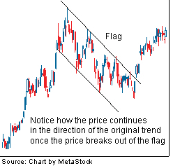 |
| Figure 1: The flag pattern |
{kind=link}
In general, the slope of the flag should move in the opposite direction of the initial sharp price movement; so if the initial movement were up, the flag should be downward sloping.
The buy or sell signal is formed once the price breaks through the support or resistance level, with the trend continuing in the prior direction. This breakthrough should be on heavier volume to improve the signal of the chart pattern.
The Pennant
The pennant forms what looks like a symmetrical triangle, where the support and resistance trendlines converge towards each other. The pennant pattern does not need to follow the same rules found in triangles, where they should test each support or resistance line several times. Also, the direction of the pennant is not as important as it is in the flag; however, the pennant is generally flat.
| 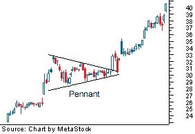 |
| Figure 2: The Pennant |
{kind=link}
General Ideas
While the construct of the pause in the trend is different for the flag and pennant, the attributes of the chart patterns themselves are similar. It is vital that the price movement prior to the flag or pennant be a strong, sharp move.
Typically, these patterns take less time to form during downtrends than in uptrends. In terms of pattern length, they are generally short-term patterns lasting one to three weeks, but can be formed over longer periods.
The volume, as with most breakout signals, should be seen as strong during the breakout to confirm the signal. Upon breakout, the initial price objective is equal to the distance of the prior move added to the breakout point. For example, if a prior sharp up movement was from $30 to $40, then the resulting price objective from a price breakout of $38 would be $48 ($38+$10).
Analyzing Chart Patterns: The Wedge
The wedge chart pattern signals a reverse of the trend that is currently formed within the wedge itself. Wedges are similar in construction to a symmetrical triangle in that there are two trendlines - support and resistance - which band the price of a security.
The wedge pattern differs in that it is generally a longer-term pattern, usually lasting three to six months. It also has converging trendlines that slant in an either upward or downward direction, which differs from the more uniform trendlines of triangles.
There are two main types of wedges – falling and rising – which differ on the overall slant of the pattern. A falling wedge slopes downward, while a rising wedge slants upward.
Falling Wedge
The falling wedge is a generally bullish pattern signaling that one will likely see the price break upwards through the wedge and move into an uptrend. The trendlines of this pattern converge, with both being slanted in a downward direction as the price is trading in a downtrend.
| 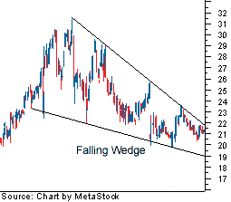 |
| Figure 1: Falling wedge pattern |
{kind=link}
From the above, one can see that a wedge is similar to the triangles, in that the price movement bounces between the two trendlines, which are bounding the price movement.
Another thing to look at in the falling wedge is that the upper (or resistance) trendline should have a sharper slope than the support level in the wedge construction. When the lower (or support) trendline is clearly flatter as the pattern forms, it signals that selling pressure is waning, as sellers have trouble pushing the price down further each time the security is under pressure.
The price movement in the wedge should at minimum test both the support trendline and the resistance trendline twice during the life of the wedge. The more times it tests each level, especially on the resistance end, the higher quality the wedge pattern is thought to be.
The buy signal is formed when the price breaks through the upper resistance line. This breakout move should be on heavier volume, but due to the longer-term nature of this pattern, it's important that the price has successive closes above the resistance line.
Rising Wedge
Conversely, a rising wedge is a bearish pattern that signals that the security is likely to head in a downward direction. The trendlines of this pattern converge, with both trendlines slanted in an upward direction.
| 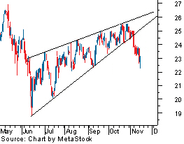 |
| Figure 2: Rising wedge pattern |
{kind=link}
As the strength of the buyers weakens (exhibited by their inability to take the price higher), the sellers start to gain momentum. The pattern is complete, with the sellers taking control of the security, when the price falls below the supporting trendline.
Analyzing Chart Patterns: Gaps
By Chad Langager and Casey Murphy, senior analyst of ChartAdvisor.com
A gap in a chart is essentially an empty space between one trading period and the previous trading period. They usually form because of an important and material event that affects the security, such as an earnings surprise or a merger agreement.
This happens when there is a large-enough difference in the opening price of a trading period where that price and the subsequent price moves do not fall within the range of the previous trading period. For example, if the price of a company's stock is trading near $40 and the next trading period opens at $45, there would be a large gap up on the chart between these two periods, as shown by the figure below.
| 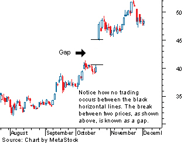 |
| Figure 1 |
{kind=link}
Gap price movements can be found on bar charts and candlestick charts but will not be found on point-and-figure or basic line charts. The reason for this is that every point on both point-and-figure charts and line charts are connected.
It is often said when referring to gaps that they will always fill, meaning that the price will move back and cover at least the empty trading range. However, before you enter a trade that profits the covering, note that this doesn't always happen and can often take some time to fill.
There are four main types of gaps: common, breakaway, runaway (measuring), and exhaustion. Each are the same in structure, differing only in their location in the trend and subsequent meaning for chartists.
Common Gap
As its name implies, the common gap occurs often in the price movements of a security. For this reason, it's not as important as the other gap movements but is still worth noting.
| 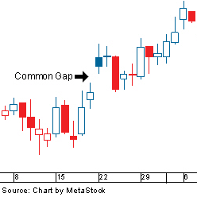 |
| Figure 2: Common Gap |
{kind=link}
These types of gaps often occur when a security is trading in a range and will often be small in terms of the gap's price movement. They can be a result of commonly occurring events, such as low-volume trading days or after an announcement of a stock split.
These gaps often fill quickly, moving back to the pre-gap price range.
Breakaway Gap
A breakaway gap occurs at the beginning of a market move - usually after the security has traded in a consolidation pattern, which happens when the price is non-trending within a bounded range. It is referred to as a breakaway gap as the gap moves the security out of a non-trending pattern into a trending pattern.
| 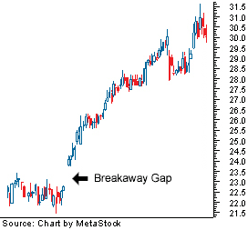 |
| Figure 3: Breakaway gap |
{kind=link}
A strong breakaway gap out of a period of consolidation is considered to be much stronger than a non-gap move out. The gap gives an indication of a large increase in sentiment in the direction of the gap, which will likely last for some time, leading to an extended move.
The strength of this gap (and the accuracy of its signal) can be confirmed by looking at that volume during the gap. The greater the volume out of the gap, the more likely the security will continue in the direction of the gap, also reducing the chances of it being filled.
While the breakaway gap generally doesn't fill like the common gap, it will in some cases. The gap will often provide support or resistance for the resulting move. For an upward breakaway gap, the lowest point of the second candlestick provides support. A downward breakaway gap provides resistance for a move back up at the highest price in the second candlestick.
The breakaway gap is a good sign that the new trend has started.
Runaway Gap (Measuring Gap)
A runaway gap is found around the middle of a trend, usually after the price has already made a strong move. It is a healthy sign that the current trend will continue as it indicates continued, and even increasing, interest in the security.
| 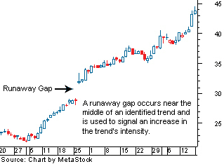 |
| Figure 4: Runaway (or measuring) gap |
{kind=link}
After a security has made a strong move, many of the traders that have been on the sideline waiting for a better entry or exit point decide that it may not be coming and if they wait any longer they will miss the trade. It is this increased buying or selling that creates the runaway gap and continuation of the trend.
Volume in a runaway gap is not as important as it is for a breakaway gap but generally should be marked with average volume. If the volume is too extreme, it could signal that the runaway gap is actually an exhaustion gap (discussed further in the next section), which signals the end of a trend.
The runaway gap forms support or resistance in the exact same manner as the breakaway gap. Likewise, the measuring gap does not often fill, and there's cause for concern if the price breaks through the support or resistance, as it is a sign that the trend is weakening - and could even signal that this is an exhaustion gap and not a runaway gap.
Exhaustion Gap
This is the last gap that forms at the end of a trend and is a negative sign that the trend is about to reverse. This usually occurs at the last thrusts of a trend (typically marked with panic or hype), but can also be the point when weaker market participants start to move in or out of the security.
The exhaustion gap usually coincides with an irrational market philosophy, such as the security being touted as "a can't-miss opportunity" or conversely as something to "avoid at all costs".

|
| Figure 5: Exhaustion gap |
To identify this as an exhaustion gap or the last large move in the trend, the gap should be marked with a large amount of volume. The strength of this signal is also increased when it occurs after the security has already made a substantial move.
Because the exhaustion gap signals a trend reversal, the gap is expected to fill. After the exhaustion gap, the price will often move sideways before eventually moving against the prior trend. Once the price fills the gap, the pattern is considered to be complete and signals that the trend will reverse.
Island Reversal
One of the most well-known gap patterns is the island reversal, which is formed by a gap followed by flat trading and then confirmed by another gap in the opposite direction. This pattern is a strong signal of a top or bottom in a trend, indicating a coming shift in the trend.
| 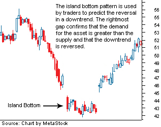 |
| Figure 6: Island reversal pattern |
{kind=link}
Above is an example of an island-bottom reversal that occurs at the end of a downtrend. It's formed when an exhaustion gap appears in a downtrend followed by a period of flat trading. The pattern is confirmed when an upward breakaway gap forms in the price pattern.
The size of the trend reversal or the quality of the signal is dependent on the location of the island in the prior trend. If it happens near the beginning of a trend, then the size of the reversal will likely be less significant.
Analyzing Chart Patterns: Triple Tops And Bottoms
The triple top and triple bottom are reversal patterns that are formulated when a security attempts to move past a key level of support or resistance in the direction of the prevailing trend.
This chart pattern represents the market's attempt to move a security in a certain direction. After three failed attempts, the buyers (in the case of a top) or sellers (in the case of a bottom) give up, and the opposing group in the market takes a hold of the security, sending it downward (sellers) or upward (buyers).
Triple Top
This bearish reversal pattern is formed when a security that is trending upward tests a similar level of resistance three times without breaking through. Each time the security tests the resistance level, it falls to a similar area of support. After the third fall to the support level, the pattern is complete when the security falls through the support; the price is then expected to move in a downward trend.

|
| Figure 1: Triple top reversal |
This up-and-down movement is repeated for the third time; but this time the buyers, after failing three times, give up on the security, and the sellers take over. Upon falling through the level of support, the security is expected to trend downward.
This pattern can be difficult to spot in the early stages as it will initially look like a double-top pattern, which was discussed in a previous section. The most important thing here is that one waits for the price to move past the level of resistance before entering the security, as the security could actually just end up being range-bound, where it trades between the two levels for some time.
In the triple-top formation, each test of resistance at the upper end should be marked with declining volume at each successive peak. And again, when the price breaks below the support level, it should be accompanied by high volume.
Once the signal is formed, the price objective is based on the size of the chart pattern or the price distance between the level of resistance and support. This is then deducted from the breakout point.
Triple Bottom
This bullish reversal pattern has all of the same attributes as the triple top but signals a reversal of a downward trend. The triple-bottom pattern illustrates a security that is trading in a downtrend and attempts to fall through a level of support three times, each time moving back to a level of resistance. After the third attempt to push the price lower, the pattern is complete when the price moves above the resistance level and begins trading in an upward trend.
| 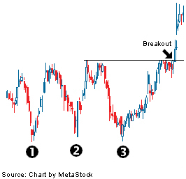 |
| Figure 2: Triple bottom reversal |
{kind=link}
This is repeated a third time, but after failing again to move to a new low, the pattern is complete when the security moves above the resistance level to begin trading in an uptrend.
In this pattern, volume plays a role similar to the triple top, declining at each trough as it tests the support level, which is a sign of diminishing selling pressure. Again, volume should be high on a breakout above the resistance level on the completion of the pattern.
The price objective will also initially be calculated as the distance of the chart pattern added to the price breakout. So if the chart pattern is formed between $50 and $30 at a price breakout of $50 the price objective is $70 ($50+$20).
Meaning Behind Triple Tops and Bottoms
The significance of these two formations is that an established trend has hit a major section of support/resistance, which stops the trend's ability to continue. This is an indication that the buying or selling pressure that is supporting the trend is beginning to weaken. It also is an indication that the opposite pressure is gaining strength.
The chart pattern is signaling that there is a shift in the supply and demand of the security and of the balance between buyers and sellers. When a reversal signal is formed in a triple top, there is a shift from buyers moving the security upward to sellers moving the security downward.
Analyzing Chart Patterns: Round Bottoms
A rounding bottom, also referred to as a saucer bottom, is a long-term reversal pattern that signals a shift from a downtrend to an uptrend. This pattern is traditionally thought to last anywhere from several months to several years. Due to the long-term look of these patterns and their components, the signal and construct of these patterns are more difficult to identify than other reversal patterns.
A rounding-bottom pattern looks similar to a cup and handle, but without the handle. The basic formation of a rounding bottom comes from a downward price movement to a low, followed by a rise from the low back to the start of the downward price movement - forming what looks like a rounded bottom.
The pattern should be preceded by a downtrend but will sometimes be preceded by a sideways price movement that formed after a downward trend. The start of the rounding bottom (its left side) is usually caused by a peak in the downward trend followed by a long price descent to a new long-term low.

|
| Figure: Rounding bottom (saucer bottom) reversal |
The time distance from the initial peak to the long-term low is considered to be half the distance of the rounding bottom. This helps to give chartists an idea to as to how long the chart pattern will last or when the pattern is expected to be complete, with a breakout to the upside. For example, if the first half of the pattern is one year, then the signal will not be formed until around a year later.
In terms of the chart pattern's quality, the two stages of the rounding bottom should be similar in length. If the price were to rise too quickly from the low to the prior peak, the strength of the chart pattern would be diminished. This does not mean that they must be equal, but the trend should illustrate a cup shape on the chart.
The way in which the price moves from peak to low and from low to second peak may cause some confusion as the long-term nature of the pattern can display several different price movements. The price movement does not necessarily move in a straight line but will often have many ups and downs. However, the general direction of the price movement (either up or down) is important, depending on the stage of the pattern.
Volume is one of the most important confirming measures for this pattern where volume should be high at the initial peak (or start of the pattern) and weaken as the price movement heads toward the low. As the price moves away from the low to the price level set by the initial peak, volume should be rising.
Breakouts in chart patterns should be accompanied by a large increase in volume, which helps to strengthen the signal formed by the breakout. Once the price moves above the peak that was established at the start of the chart pattern, the downward trend is considered to have reversed and a buy signal is formed.
Analyzing Chart Patterns: Conclusion
By Chad Langager and Casey Murphy, senior analyst of ChartAdvisor.com
This introduction to chart patterns has provided a broad overview of chart pattern analysis and several of the largest patterns.
Here's a brief summary of what we've covered:
- Chart analysis is the technique of using patterns formed on a securities chart to formulate buy and sell signals.
- There are two types of chart patterns: reversal and continuation.
- A continuation pattern suggests that the prior trend will continue upon completion of the pattern.
- A reversal pattern suggests that the prior trend will reverse upon completion of the pattern.
- A head-and-shoulders top suggests a reversal in the prior uptrend.
- An inverse head and shoulders suggests a reversal in the prior downtrend.
- A cup-and-handle pattern is a bullish continuation pattern that suggests a continuation of the prior uptrend.
- A double top is a bearish reversal pattern, which suggests that the preceding up trend will reverse after confirmation of the pattern.
- A double bottom is a bullish reversal pattern, which suggests that the prior downtrend will reverse.
- There are three main types of triangle patterns - symmetrical, descending and ascending, which are constructed by converging trendlines.
- A symmetrical triangle, which is formed when two similarly sloped trendlines converge, typically suggests a continuation of the prior trend.
- A descending triangle, which is formed when a downward sloping trendline converges towards a horizontal support line, suggests a downward trend after completion of the pattern.
- An ascending triangle, which is formed when an upward sloping trendline converges towards a horizontal resistance line, suggests an uptrend after completion of the pattern.
- Flags and pennants are continuation patterns formed after a sharp price movement. The move consolidates, forming a flag shape or pennant share, and suggests another strong move in the same direction of the prior move upon completion.
- A wedge chart pattern suggests a reversal in the prior trend when the price action moves outside of the converging trend lines in the opposite direction of the prior trend.
- A gap is formed on a chart when there is an empty space between two time periods. Common gap patterns include: common, breakaway, runaway (measuring) and exhaustion.
- A triple top is a reversal pattern formed when a security attempts to move past a level of resistance three times and fails. Upon failure of the third attempt the trend is thought to reverse and move in a downward trend.
- A triple bottom is a reversal pattern formed when a security attempts to move below an area of support three times but fails to do so. Upon failure of the third attempt below resistance the trend is thought to reverse and move upward.
- A rounding bottom is a long-term reversal pattern that signals a shift from a downward trend to an upward trend.